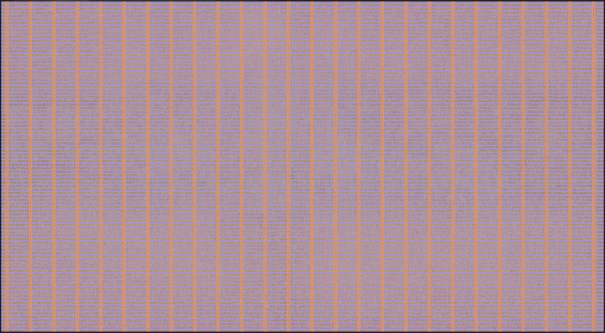
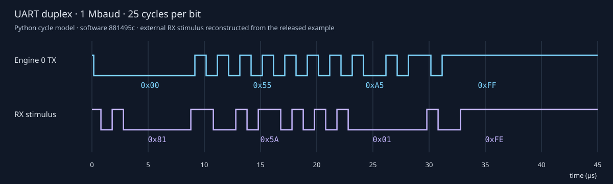
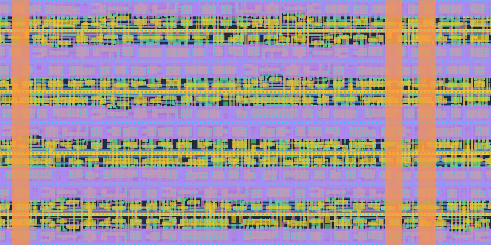

Generate and respond
UART transmit and receive, all four SPI modes, and I²C at 100 or 400 kHz. SPI and I²C examples cover both controller and target roles.
Independent hardware project · V2
Two timing engines. Repeatable behavior at the pins.
Generate and observe UART, SPI, and I²C traffic with programmable timing, independent engines, and triggered capture. A Verilog and Python project developed for Jane Street’s Protocol Emulator ASIC Competition.
V2 milestone released · selected layout validated through local checkpoint recovery
Start with the complete die, then zoom into the routing and isolate individual layers. The explorer runs here, directly in the page.

Toggle layers or use Solo to inspect an individual GDS layer/datatype pair.
Drag to pan · double-click or pinch to zoom · Ctrl/⌘ + scroll to zoom · arrow keys to pan · F to fit. Ordinary scrolling moves the page.
Explore the complete die with progressively sharper image tiles, then zoom into original polygon coordinates from every hierarchy level. Download the GDS for the full layout and text labels.
Protocols are firmware running on a common timing engine. V2 extends that foundation to receiving data, coordinating two engines, and recording what happened at the interface.
UART transmit and receive, all four SPI modes, and I²C at 100 or 400 kHz. SPI and I²C examples cover both controller and target roles.
Each engine has 16-byte TX and 16-record RX queues. A separate 32-record capture unit records synchronized pin activity, including glitches rejected by the engine input filter.
Python assembly and loading tools, a cycle model, independent protocol observers, and retained test evidence connect intended behavior to implementation.
Eight protocol I/O pins connect the programmable engines to the device under test. Capture observes the interface independently.
A bounded 1 Mbaud UART duplex example: one engine transmits four bytes while the other receives a different four-byte sequence. Each bit spans 25 system clocks.

The V2 release includes protocol tests, routed-netlist simulation, and extracted timing analysis across fast, typical, and slow corners.
Software & RTL · 881495c
Complete V1/V2 functional gate, both tops’ lint and synthesis, five induction proofs, six mutation checks, and 14 executable protocol examples.
Selected netlist · 447b3df
Functional cell-model simulations passed the protocol pin scenarios and supplemental reset and state-loss checks on the selected routed netlist.
Physical implementation
The selected local checkpoint recovery passed the required physical checks, independent mapping and full-geometry checks.

| Process / allocation | IHP 130 nm CMOS5L / 6 × 4 tiles |
|---|---|
| Clock / transition / uncertainty | 40 ns / 1.5 ns / 0.25 ns |
| Standard-cell area | 793,932 µm² |
| Core utilization | 87.98% |
| Minimum setup / hold slack | +18.456291 ns / +0.054473 ns |
| Slew / fanout / capacitance violations | 0 at every required corner |
The V2 layout completed validation through a local Tiny Tapeout checkpoint recovery at physical revision 447b3df. Its elaborated RTL and prepared settings match software revision 881495c.
Extracted timing analysis passes at all three corners. The table reports the lowest setup and hold margins across those corners.
Use the V2 Python APIs to configure the engines, load programs, and read results. Program and capture storage are volatile, so reset, reconfigure, and reload after state loss. The 1 Mbaud duplex examples run preloaded bursts; sustained operation is limited by the 1 MHz SPI host service rate. The installed CLI supports V1.
Next steps include expanded RTL properties, review of compositional assumptions, broader mutation testing, and a Lean ISA model. Verification roadmap →
More capability in the same 6 × 4 footprint. V1 established programmable transmission and completed electrical closure. V2 adds independent execution, receive paths, and capture.
| Capability | V1.0.0 | V2 |
|---|---|---|
| Timing engines | 1 | 2 independent engines |
| Program storage | 64 × 24 bits | 64 × 24 bits per engine |
| TX / RX buffering | 4 TX bytes / no RX queue | 16 TX bytes / 16 RX records per engine |
| Protocol examples | UART transmit | UART TX/RX, SPI modes 0–3, I²C |
| Triggered capture | None | 32 timestamped records |
| Clock / allocation | 25 MHz / 6 × 4 tiles | 25 MHz / 6 × 4 tiles |
Historical baseline: completed V1.0.0 release. Both versions target 25 MHz. V2 adds a second engine, receive queues, and triggered capture.
V2 milestone published 18 October 2026. Python package and runtime version: 2.0.0rc1.
Website artifact checksums · Viewer adapted from the project’s static renderer at 856a1ea · Apache-2.0 license